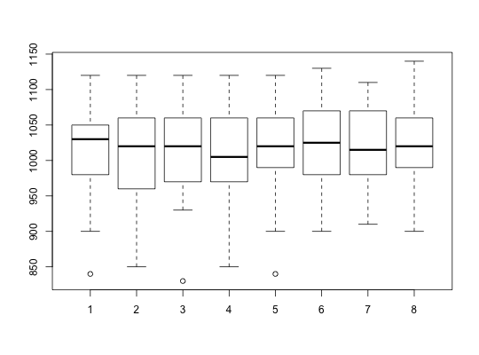

Data for Exercise 10.9
Chips
A data frame with 30 observations on the following eight variables.
wafer1wafer1wafer1wafer1wafer2wafer2wafer2wafer2Yashchin, E. 1995. “Likelihood Ratio Methods for Monitoring Parameters of a Nested Random Effect Model.” Journal of the American Statistical Association, 90, 729-738.
Kitchens, L. J. (2003) Basic Statistics and Data Analysis. Duxbury
str(Chips)#> 'data.frame': 30 obs. of 8 variables: #> $ wafer11: int 950 1050 940 990 980 900 1050 1100 1070 1000 ... #> $ wafer12: int 930 1050 960 1020 980 940 1070 1060 1030 950 ... #> $ wafer13: int 950 1030 940 1020 980 930 1100 1070 1070 1010 ... #> $ wafer14: int 930 1040 930 1000 1000 930 1070 1050 1020 970 ... #> $ wafer21: int 1010 1050 1000 980 900 930 1110 1070 1020 1020 ... #> $ wafer22: int 980 1050 980 990 920 930 1130 1090 1070 980 ... #> $ wafer23: int 970 1050 960 1000 910 960 1100 1110 1090 990 ... #> $ wafer24: int 980 1060 1020 990 940 900 1140 1060 1050 1020 ...with(data = Chips, boxplot(wafer11, wafer12, wafer13, wafer14, wafer21, wafer22, wafer23, wafer24) )